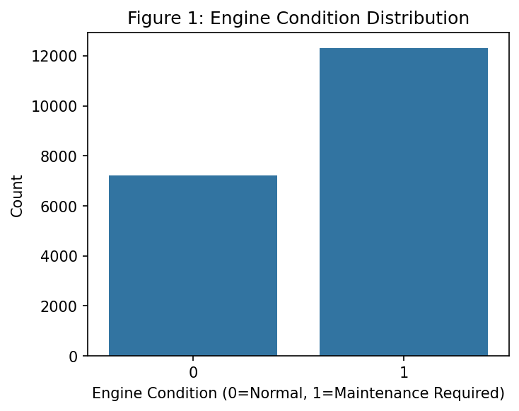
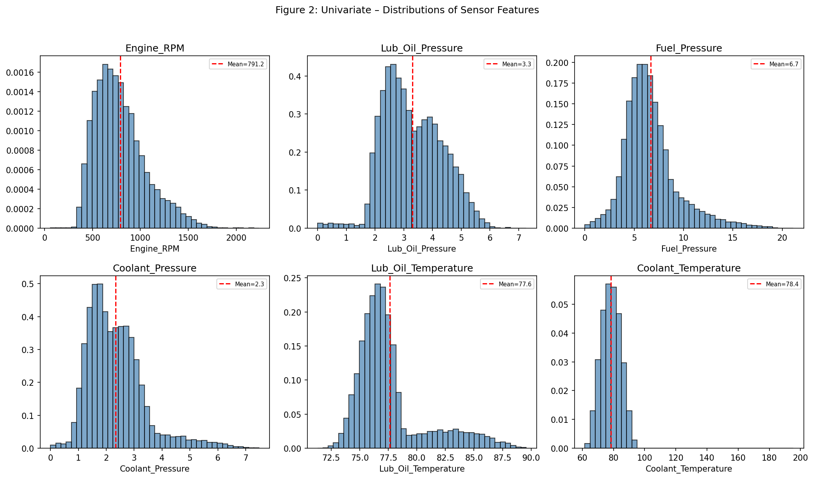
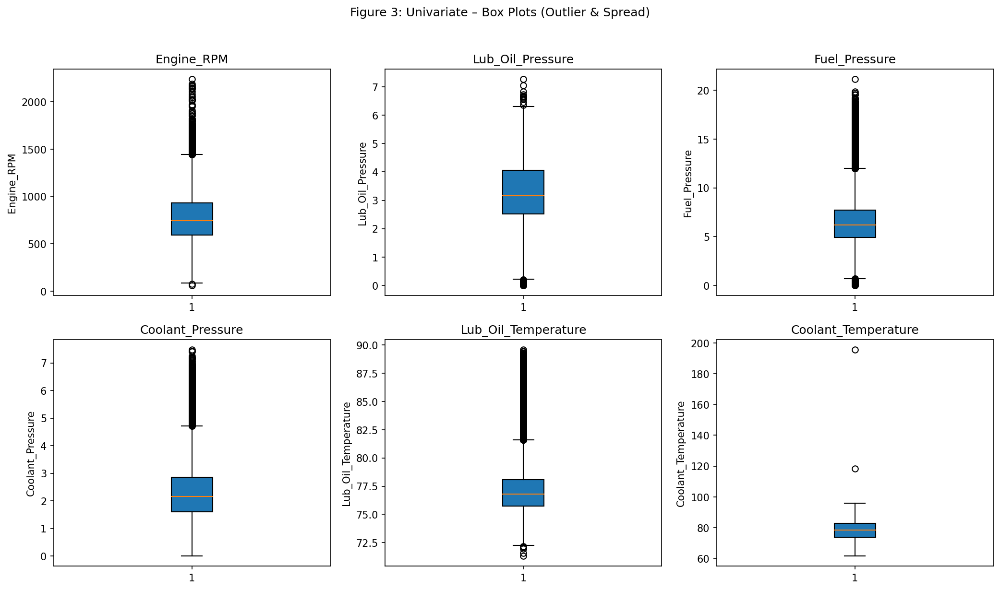
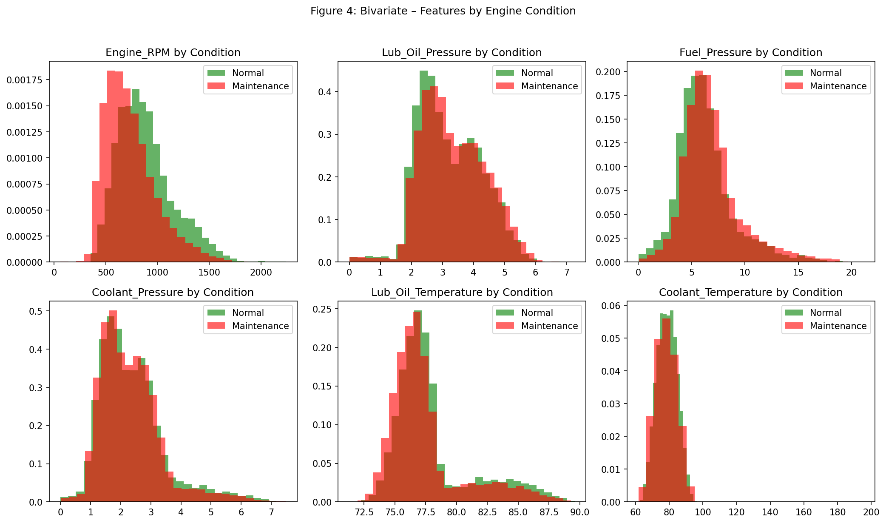
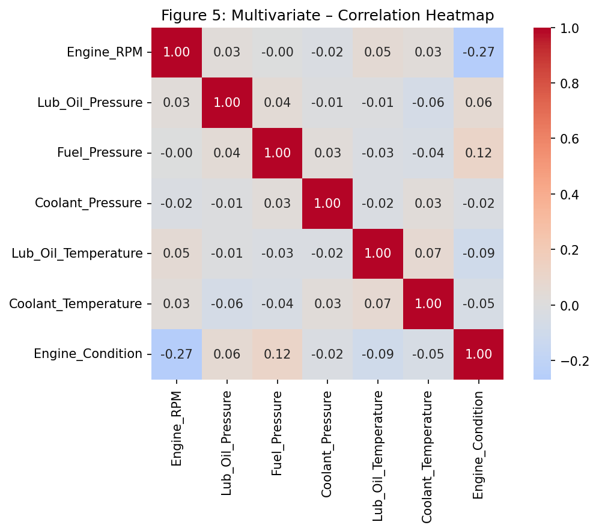

Learner Name: Anant Tripathi
Project Name: Engine Predictive Maintenance
Date: February 2026
This interim report presents the progress of an end-to-end MLOps pipeline for Engine Predictive Maintenance. The pipeline automates data registration, exploratory data analysis, data preparation, and model building with experimentation tracking. The system classifies engine conditions (Normal vs. Maintenance Required) using sensor data and deploys the trained model for real-time predictions.
A master folder structure is created with a data subfolder. The raw engine sensor dataset is registered on the Hugging Face Dataset Hub at ananttripathiak/engine-maintenance-dataset using the data_register.py script. This enables version control, reproducibility, and seamless integration with downstream pipeline steps.
engine_maintenance_project/engine_maintenance_project/data/engine_data.csv (19,535 rows × 7 columns)Centralized data registration reduces manual errors, ensures consistency across experiments, and supports collaboration. Version-controlled datasets enable audit trails and reproducibility for compliance and quality assurance.
The engine sensor dataset contains real-time measurements from various engines under different operating conditions. Data is collected from sensors monitoring critical engine parameters indicative of engine health and maintenance needs.
| Metric | Value |
|---|---|
| Rows | 19,535 |
| Columns | 7 |
| Missing Values | None |
| Data Types | All numerical (float64, int64) |
Features: Engine_RPM, Lub_Oil_Pressure, Fuel_Pressure, Coolant_Pressure, Lub_Oil_Temperature, Coolant_Temperature
Target: Engine_Condition (0: Normal, 1: Maintenance Required)
Figure 1: Engine Condition Distribution

Figure 2: Univariate Distributions of Sensor Features

Figure 3: Box Plots – Outlier Detection

Figure 4: Bivariate Analysis – Features by Engine Condition

Figure 5: Correlation Heatmap

| Feature | Correlation with Target |
|---|---|
| Fuel_Pressure | 0.12 |
| Lub_Oil_Pressure | 0.06 |
| Coolant_Pressure | -0.02 |
| Coolant_Temperature | -0.05 |
| Lub_Oil_Temperature | -0.09 |
| Engine_RPM | -0.27 |
Observation: Engine_RPM has the strongest (negative) correlation with maintenance need. Lower RPM combined with abnormal pressure/temperature patterns may indicate fault conditions.
| Split | Size |
|---|---|
| Train | 15,628 |
| Test | 3,907 |
Train and test datasets saved as data/train.csv and data/test.csv and uploaded to the Hugging Face dataset repository.
Proper data preparation ensures model generalizability. Stratified splitting preserves class distribution, and versioned datasets support reproducible model retraining.
Hyperparameter Search Space: - n_estimators: [100, 200, 300] - max_depth: [None, 10, 20] - min_samples_split: [2, 5] - min_samples_leaf: [1, 2]
| Parameter | Value |
|---|---|
| n_estimators | 300 |
| max_depth | 10 |
| min_samples_split | 5 |
| min_samples_leaf | 1 |
| Metric | Train | Test |
|---|---|---|
| Accuracy | 0.77 | 0.66 |
| F1-Score | 0.83 | 0.76 |
| ROC-AUC | — | 0.70 |
| Class | Precision | Recall | F1-Score | Support |
|---|---|---|---|---|
| Normal | 0.57 | 0.35 | 0.43 | 1,444 |
| Maintenance | 0.69 | 0.85 | 0.76 | 2,463 |
| Accuracy | 0.66 | 3,907 | ||
| Macro Avg | 0.63 | 0.60 | 0.60 | 3,907 |
| Weighted Avg | 0.65 | 0.66 | 0.64 | 3,907 |
| Predicted Normal | Predicted Maintenance | |
|---|---|---|
| Actual Normal | 504 | 940 |
| Actual Maintenance | 377 | 2,086 |
The interim pipeline successfully implements: 1. Data Registration on Hugging Face 2. Comprehensive EDA with univariate, bivariate, and multivariate analysis 3. Data Preparation with train/test splits and versioning 4. Model Building with Random Forest, hyperparameter tuning, MLflow tracking, and Hugging Face model registration
The model achieves a test F1-score of 0.76 and ROC-AUC of 0.70, with strong recall for the maintenance class. The pipeline is ready for deployment and GitHub Actions automation in the final submission.
Raw code, full model logs, and extended outputs are available in the accompanying HTML notebook: AnantTripathi_EnginePredictiveMaintenance_Notebook.html.
Page 1 of 1